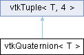

|
Etrek
|
|
Etrek
|
templated base type for storage of quaternions. More...
#include <vtkQuaternion.h>

Public Member Functions | |
| vtkQuaternion () | |
| vtkQuaternion (const T &scalar) | |
| vtkQuaternion (const T *init) | |
| vtkQuaternion (const T &w, const T &x, const T &y, const T &z) | |
| T | SquaredNorm () const |
| T | Norm () const |
| void | ToIdentity () |
| T | Normalize () |
| vtkQuaternion< T > | Normalized () const |
| void | Conjugate () |
| vtkQuaternion< T > | Conjugated () const |
| void | Invert () |
| vtkQuaternion< T > | Inverse () const |
| void | ToUnitLog () |
| vtkQuaternion< T > | UnitLog () const |
| void | ToUnitExp () |
| vtkQuaternion< T > | UnitExp () const |
| void | NormalizeWithAngleInDegrees () |
| vtkQuaternion< T > | NormalizedWithAngleInDegrees () const |
| template<typename CastTo> | |
| vtkQuaternion< CastTo > | Cast () const |
| void | ToMatrix3x3 (T A[3][3]) const |
| void | FromMatrix3x3 (const T A[3][3]) |
| vtkQuaternion< T > | Slerp (T t, const vtkQuaternion< T > &q) const |
| vtkQuaternion< T > | InnerPoint (const vtkQuaternion< T > &q1, const vtkQuaternion< T > &q2) const |
| vtkQuaternion< T > | operator+ (const vtkQuaternion< T > &q) const |
| vtkQuaternion< T > | operator- (const vtkQuaternion< T > &q) const |
| vtkQuaternion< T > | operator* (const vtkQuaternion< T > &q) const |
| vtkQuaternion< T > | operator* (const T &scalar) const |
| void | operator*= (const T &scalar) const |
| vtkQuaternion< T > | operator/ (const vtkQuaternion< T > &q) const |
| vtkQuaternion< T > | operator/ (const T &scalar) const |
| void | Set (const T &w, const T &x, const T &y, const T &z) |
| void | Set (T quat[4]) |
| void | Get (T quat[4]) const |
| void | SetW (const T &w) |
| const T & | GetW () const |
| void | SetX (const T &x) |
| const T & | GetX () const |
| void | SetY (const T &y) |
| const T & | GetY () const |
| void | SetZ (const T &z) |
| const T & | GetZ () const |
| T | GetRotationAngleAndAxis (T axis[3]) const |
| void | SetRotationAngleAndAxis (T angle, T axis[3]) |
| void | SetRotationAngleAndAxis (const T &angle, const T &x, const T &y, const T &z) |
| void | operator/= (const T &scalar) |
| Public Member Functions inherited from vtkTuple< T, 4 > | |
| vtkTuple ()=default | |
| int | GetSize () const |
| T * | GetData () |
| T & | operator[] (int i) |
| T | operator() (int i) const |
| bool | Compare (const vtkTuple< T, Size > &other, const T &tol) const |
| vtkTuple< TR, Size > | Cast () const |
Static Public Member Functions | |
| static vtkQuaternion< T > | Identity () |
Additional Inherited Members | |
| Protected Attributes inherited from vtkTuple< T, 4 > | |
| T | Data [Size] |
templated base type for storage of quaternions.
This class is a templated data type for storing and manipulating quaternions. The quaternions have the form [w, x, y, z]. Given a rotation of angle theta and axis v, the corresponding quaternion is [w, x, y, z] = [cos(theta/2), v*sin(theta/2)]
This class implements the Spherical Linear interpolation (SLERP) and the Spherical Spline Quaternion interpolation (SQUAD). It is advised to use the vtkQuaternionInterpolator when dealing with multiple quaternions and or interpolations.
| vtkQuaternion< T >::vtkQuaternion | ( | ) |
Default constructor. Creates an identity quaternion.
|
inlineexplicit |
Initialize all of the quaternion's elements with the supplied scalar.
|
inlineexplicit |
Initialize the quaternion's elements with the elements of the supplied array. Note that the supplied pointer must contain at least as many elements as the quaternion, or it will result in access to out of bounds memory.
| vtkQuaternion< T >::vtkQuaternion | ( | const T & | w, |
| const T & | x, | ||
| const T & | y, | ||
| const T & | z ) |
Initialize the quaternion element explicitly.
| vtkQuaternion< CastTo > vtkQuaternion< T >::Cast | ( | ) | const |
Cast the quaternion to the specified type and return the result.
| void vtkQuaternion< T >::Conjugate | ( | ) |
Conjugate the quaternion in place.
| vtkQuaternion< T > vtkQuaternion< T >::Conjugated | ( | ) | const |
Return the conjugate form of this quaternion.
| void vtkQuaternion< T >::FromMatrix3x3 | ( | const T | A[3][3] | ) |
Convert a 3x3 matrix into a quaternion. This will provide the best possible answer even if the matrix is not a pure rotation matrix. The method used is that of B.K.P. Horn.
| T vtkQuaternion< T >::GetRotationAngleAndAxis | ( | T | axis[3] | ) | const |
Set/Get the angle (in radians) and the axis corresponding to the axis-angle rotation of this quaternion.
|
static |
Return the identity quaternion. Note that the default constructor also creates an identity quaternion.
| vtkQuaternion< T > vtkQuaternion< T >::InnerPoint | ( | const vtkQuaternion< T > & | q1, |
| const vtkQuaternion< T > & | q2 ) const |
Interpolates between quaternions, using spherical quadrangle interpolation.
| vtkQuaternion< T > vtkQuaternion< T >::Inverse | ( | ) | const |
Return the inverted form of this quaternion.
| void vtkQuaternion< T >::Invert | ( | ) |
Invert the quaternion in place. This is equivalent to conjugate the quaternion and then divide it by its squared norm.
| T vtkQuaternion< T >::Norm | ( | ) | const |
Get the norm of the quaternion, i.e. its length.
| T vtkQuaternion< T >::Normalize | ( | ) |
Normalize the quaternion in place. Return the norm of the quaternion.
| vtkQuaternion< T > vtkQuaternion< T >::Normalized | ( | ) | const |
Return the normalized form of this quaternion.
| vtkQuaternion< T > vtkQuaternion< T >::NormalizedWithAngleInDegrees | ( | ) | const |
Returns a quaternion normalized and transformed so its angle is in degrees and its axis normalized.
| void vtkQuaternion< T >::NormalizeWithAngleInDegrees | ( | ) |
Normalize a quaternion in place and transform it to so its angle is in degrees and its axis normalized.
| vtkQuaternion< T > vtkQuaternion< T >::operator* | ( | const T & | scalar | ) | const |
Performs multiplication of the quaternions by a scalar value.
| vtkQuaternion< T > vtkQuaternion< T >::operator* | ( | const vtkQuaternion< T > & | q | ) | const |
Performs multiplication of quaternion of the same basic type.
| void vtkQuaternion< T >::operator*= | ( | const T & | scalar | ) | const |
Performs in place multiplication of the quaternions by a scalar value.
| vtkQuaternion< T > vtkQuaternion< T >::operator+ | ( | const vtkQuaternion< T > & | q | ) | const |
Performs addition of quaternion of the same basic type.
| vtkQuaternion< T > vtkQuaternion< T >::operator- | ( | const vtkQuaternion< T > & | q | ) | const |
Performs subtraction of quaternions of the same basic type.
| vtkQuaternion< T > vtkQuaternion< T >::operator/ | ( | const T & | scalar | ) | const |
Performs division of the quaternions by a scalar value.
| vtkQuaternion< T > vtkQuaternion< T >::operator/ | ( | const vtkQuaternion< T > & | q | ) | const |
Performs division of quaternions of the same type.
| void vtkQuaternion< T >::operator/= | ( | const T & | scalar | ) |
Performs in place division of the quaternions by a scalar value.
| void vtkQuaternion< T >::Set | ( | const T & | w, |
| const T & | x, | ||
| const T & | y, | ||
| const T & | z ) |
Set/Get the w, x, y and z components of the quaternion.
| void vtkQuaternion< T >::SetW | ( | const T & | w | ) |
Set/Get the w component of the quaternion, i.e. element 0.
| void vtkQuaternion< T >::SetX | ( | const T & | x | ) |
Set/Get the x component of the quaternion, i.e. element 1.
| void vtkQuaternion< T >::SetY | ( | const T & | y | ) |
Set/Get the y component of the quaternion, i.e. element 2.
| void vtkQuaternion< T >::SetZ | ( | const T & | z | ) |
Set/Get the y component of the quaternion, i.e. element 3.
| vtkQuaternion< T > vtkQuaternion< T >::Slerp | ( | T | t, |
| const vtkQuaternion< T > & | q ) const |
Interpolate quaternions using spherical linear interpolation between this quaternion and q1 to produce the output. The parametric coordinate t belongs to [0,1] and lies between (this,q1).
| T vtkQuaternion< T >::SquaredNorm | ( | ) | const |
Get the squared norm of the quaternion.
| void vtkQuaternion< T >::ToIdentity | ( | ) |
Set the quaternion to identity in place.
| void vtkQuaternion< T >::ToMatrix3x3 | ( | T | A[3][3] | ) | const |
Convert a quaternion to a 3x3 rotation matrix. The quaternion does not have to be normalized beforehand.
| void vtkQuaternion< T >::ToUnitExp | ( | ) |
Convert this quaternion to a unit exponential quaternion. The unit exponential quaternion is defined by: [w, x, y, z] = [cos(theta), v*sin(theta)].
| void vtkQuaternion< T >::ToUnitLog | ( | ) |
Convert this quaternion to a unit log quaternion. The unit log quaternion is defined by: [w, x, y, z] = [0.0, v*theta].
| vtkQuaternion< T > vtkQuaternion< T >::UnitExp | ( | ) | const |
Return the unit exponential version of this quaternion. The unit exponential quaternion is defined by: [w, x, y, z] = [cos(theta), v*sin(theta)].
| vtkQuaternion< T > vtkQuaternion< T >::UnitLog | ( | ) | const |
Return the unit log version of this quaternion. The unit log quaternion is defined by: [w, x, y, z] = [0.0, v*theta].